They help us use functions as arguments for other functions, and to return functions from the function itself.
Fiest we create a function that works on it's own.
Then we create a second function, we will tell it to expect a fuunction as an argument.
The parameter can be anything, we will let it know that the parameter is a function on the block.
Here we tell it to run the function 10 times. The function we entered is the first one, so it will console log a random number between 1 and 20, ten times.
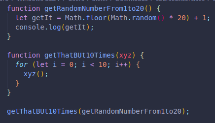And here are 3 times we ran the code in the console, the output is different each time.
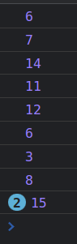 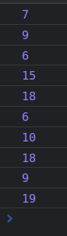 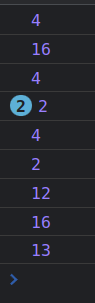We can also get a function back depending on the arguments we give it, we can later save the new function into a variable with different arguments each time, and name it accordingly.
This function checks if num is between 50 and 100, it will only check if it is between those numbers, BUT...
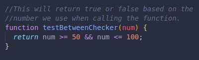We can make our own function too, with placeholders, we can change the placeholders to specific values later, when we save the modified function to a variable.
Here we have a template, the min and max can be changed to fit our needs.
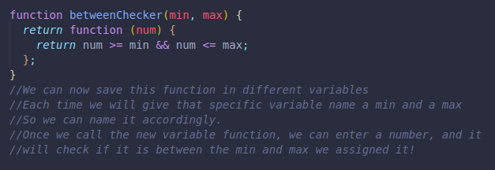Here in the console, we made some changes to those parameters, to adapt to what we were trying to check.
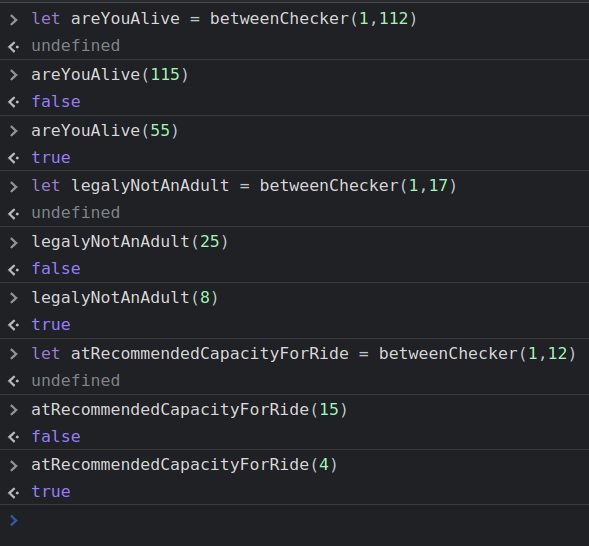areYouAlive checks if the age we enter is between 1 and 112, since that is the age of the oldest person at the moment.
legallyNOtAnAdult will check if your age is between 1 and 17, 18 or more will be true.
And same for the other example.
Here we set up 2 passwords, and check if the user enters either one, if not exactly one of them, it will not grant access.
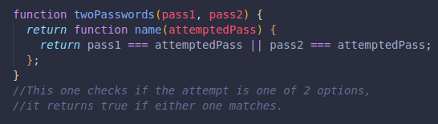We made some to make sure they worked, even with strings.
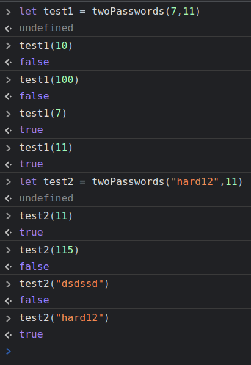And finally, this function, which return a function we can use to check if a user's username and password match the one we have in the system, if not true, we will not let the person access.
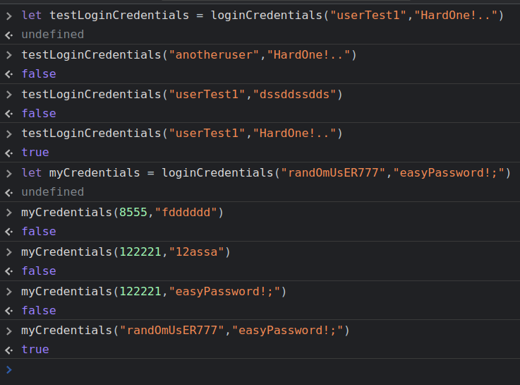 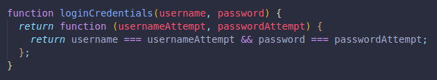